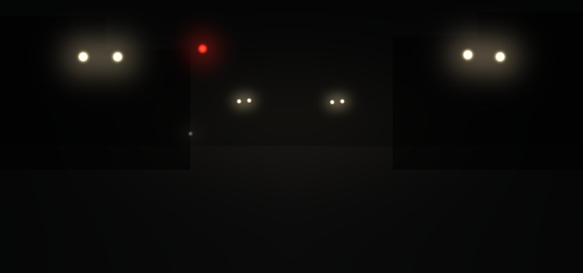
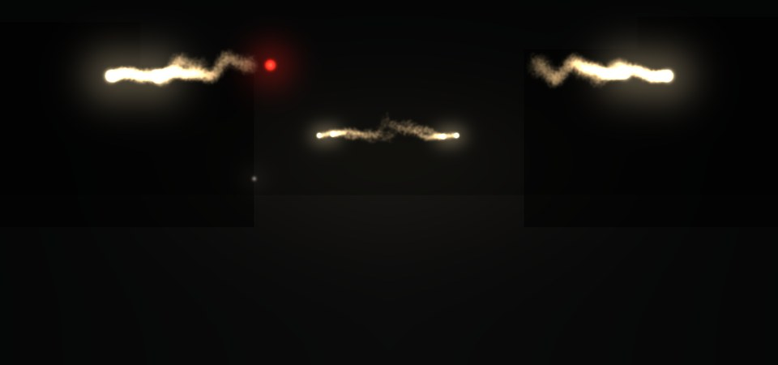
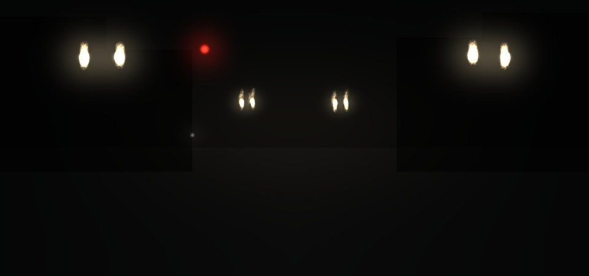
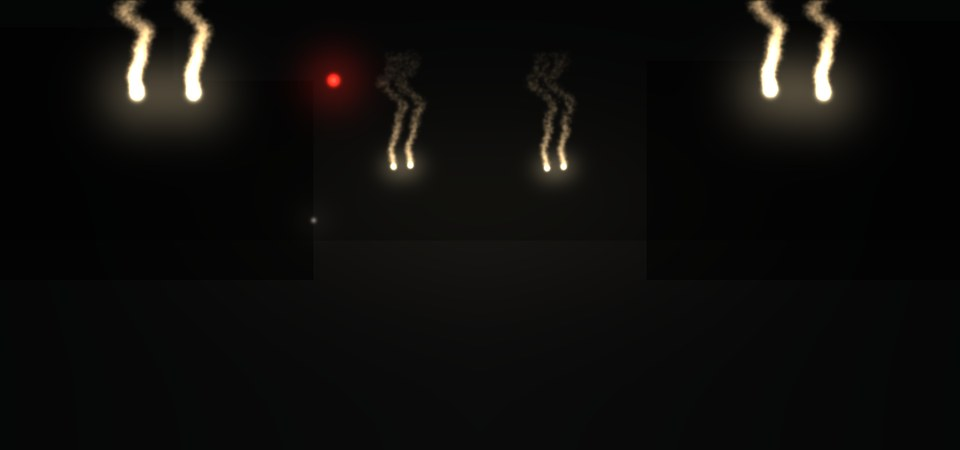
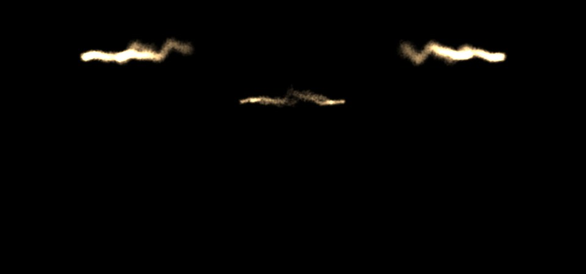
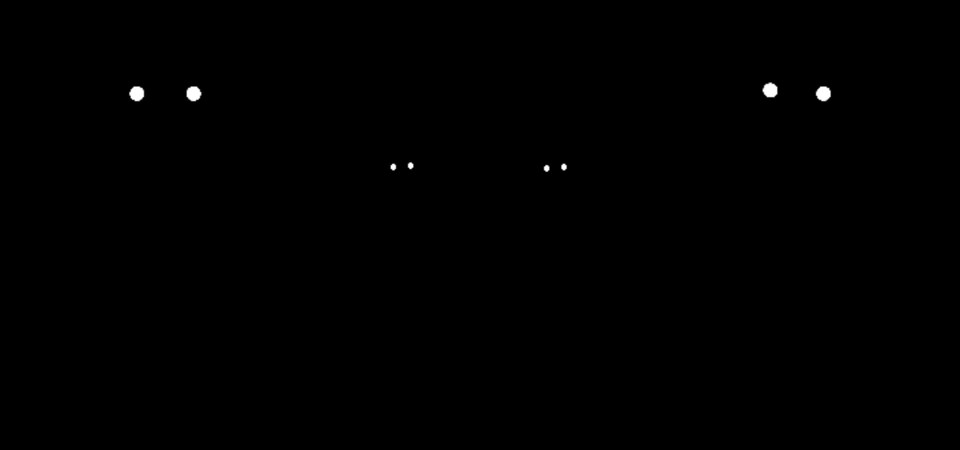

Light Trails
Wavy, smoky trails from the hottest white lights, for the analog-horror street look. Every version is kept here, so you can compare them and switch with one click.
Install
- Run
Install-LightTrails.bat. It shows every version and what's installed now. Press Enter for the recommended one, or type a number. - Windows asks for administrator rights, because OpenFX plugins live in Program Files. If Resolve is open, the installer waits for you to close it.
- Whatever it replaces is backed up first to
%LOCALAPPDATA%\LightTrails\backup.
Or from PowerShell, with the same menu:
irm https://raw.githubusercontent.com/MohamedMabrook/Website/claude/pensive-ride-egnx10/light-trails/install.ps1 | iex
Compare
The same synthetic night street through each mode: still warm lamps, a few distant lights, and one red neon sign that should not trail.






Versions
2.1Recommended
OpenFX · Color page · NVIDIA GPU- Trails on still lamps. Inward (default), Outward, Up or Angle need only the current frame. Follow Motion keeps the old behavior.
- Likely Decay-crash fix. It never fetches a frame it didn't declare, its cache tolerates grain, Resolve's GPU buffers are size-checked, and every render is logged first.
- Length is now % of frame width. Rise and Angle are new; Drift is gone.
& ([scriptblock]::Create((irm https://raw.githubusercontent.com/MohamedMabrook/Website/claude/pensive-ride-egnx10/light-trails/install.ps1))) -Version 2.1
2.0
OpenFX · Color page · NVIDIA GPU- Quality menu (Low to Final), whites-only key, depth band, GPU frame cache, Resolve CUDA buffers.
- Known problems: trails only from moving lights, and it could fetch frames it hadn't declared (suspected crash).
& ([scriptblock]::Create((irm https://raw.githubusercontent.com/MohamedMabrook/Website/claude/pensive-ride-egnx10/light-trails/install.ps1))) -Version 2.0
1.1
OpenFX · Color page · GPU + CPU- First CUDA build, with a CPU fallback. Untick Use GPU to get 1.0's CPU-only behavior.
- Known problems: very slow (12 frames re-fetched through CPU memory every render), and trails only from moving lights.
& ([scriptblock]::Create((irm https://raw.githubusercontent.com/MohamedMabrook/Website/claude/pensive-ride-egnx10/light-trails/install.ps1))) -Version 1.1
0.1
Fuse · Fusion page- The first version: a Lua Fuse with GPU kernels, for the Fusion page. It installs alongside the OpenFX versions without conflict.
- The zip also keeps the original single-frame
LightTrails.dctlandpreview.py.
& ([scriptblock]::Create((irm https://raw.githubusercontent.com/MohamedMabrook/Website/claude/pensive-ride-egnx10/light-trails/install.ps1))) -Version 0.1
1.0 (CPU only) isn't in the archive: its build was overwritten when 1.1 was compiled. 1.1 with Use GPU unticked runs the same CPU path. If you still have the 1.0 zip from the chat, send it over and it goes in here.
Side by side
| Version | Page | Renders on | Still lamps trail | Frames per tweak | Quality menu | Depth | Status |
|---|---|---|---|---|---|---|---|
| 2.1 | Color, Edit | GPU (CUDA) | Yes | 1 (Inward, Outward, Up, Angle) | Yes | Yes | Recommended |
| 2.0 | Color, Edit | GPU (CUDA) | No | 1 when cached, up to 13 after a reset | Yes | Yes | Suspected crash |
| 1.1 | Color, Edit | GPU, CPU fallback | No | 13 | No | No | Very slow |
| 0.1 | Fusion | GPU (Fusion) | Only with Drift | 13 | No | No | Archive |
If something goes wrong
- The plugin log is
%TEMP%\LightTrails.log. In 2.1, every render writes a line before it starts, so after a crash the last line shows what was running. Send that file. - Not in the OpenFX list: run the installer again and check that it prints Installed to …\OFX\Plugins\LightTrails.ofx.bundle, then restart Resolve.
- Go back to a version: run the installer and pick it. Only one OpenFX version is installed at a time.
- Remove it: run the installer and press
U.